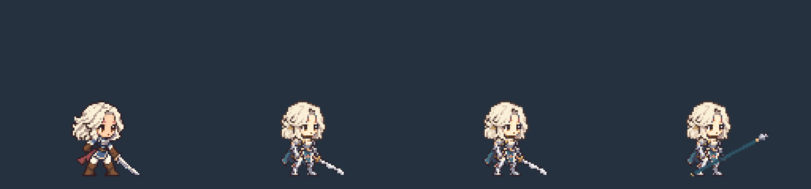

r15의 기본 27장 유지 · 16개 스킬 / 10종 모션 · 캐스팅 2장 · 검과 창2등신 · 대기 48px · 128×120 · 발 기준점 (64,112)
왼쪽부터 쿠키 r12 · 기사 r15 · 완성 기사(검) · 완성 기사(창)

1× 비교 · 검 스킬 전체 시트 · 창 스킬 전체 시트 · 창 모든 프레임 · Manifest · 제작 기록 · 검증 결과